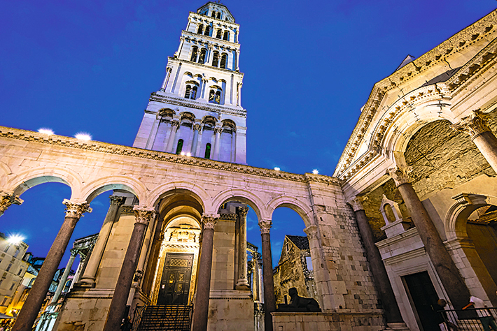
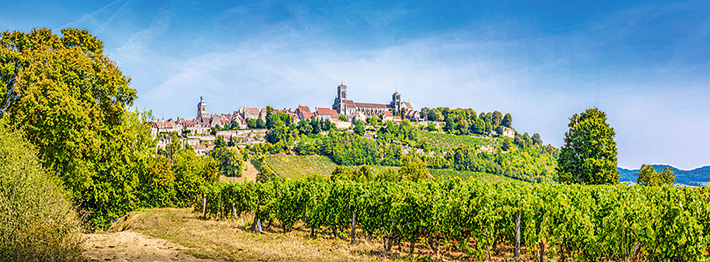
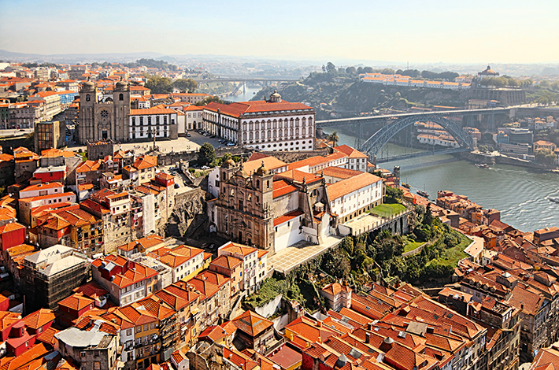
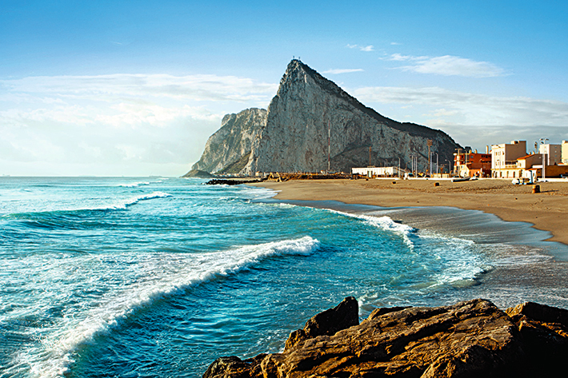
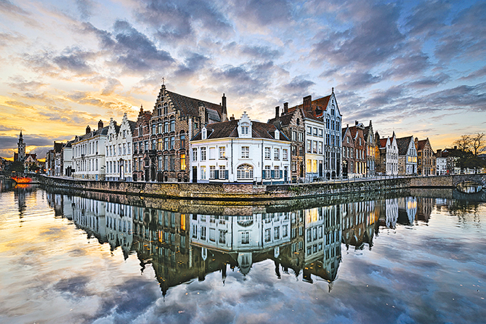
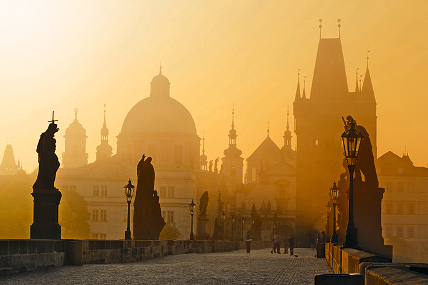

8個被嚴重低估的歐洲城市
不太熱門的地點，有時反而是最精彩的旅遊勝地
MARIA BARILLAR◎撰
1. 克羅埃西亞的斯普利特 著名的美食天堂與購物勝地，城內酒吧林立，任君挑選。此地的戴克里先宮是西元300年前後為羅馬退位皇帝戴克里先建造的，已被聯合國教科文組織列為世界文化遺產。如果這還不足以吸引您着手規畫赴斯普利特的旅程，那麼亞得里亞海岸教人心醉的美景，必然令您怦然心動。

克羅埃西亞的斯普利特
PHOTO: iStock
2. 法國的維澤萊 如果您正打算去巴黎，不妨先考慮一下維澤萊。這座建於11世紀的古城坐落在酒鄉勃艮地，以葡
萄園和聖瑪利亞．瑪達肋納聖殿而聞名。全城建於山頂，風景如詩如畫，美酒、建築和秀麗的風光，在在教人流連
忘返。

法國的維澤萊
PHOTO: iStock
3. 葡萄牙的波多 如果這城市的名字教您聯想到葡萄牙的波特酒，那麼您想的沒錯，波多確實是波特酒的發源地。波多是座美麗的港市，早在羅馬時代就已建成，建築、景物和歷史都令人難以忘懷。手舉佳釀，飽覽美景，是完美波多假期的最佳選擇。

葡萄牙的波多
PHOTO: iStock
4. 直布羅陀 再怎麼倦怠的旅人，看到這裏的壯闊景色都會心生敬畏。史書記載腓尼基人是直布羅陀最早的住民（約西元前950年），但有新證據顯示，尼安德塔人早在西元前28,000年就已來到此地。直布羅陀官方列出的唯一名勝是西班牙南岸外海的巨岩，但這座人口稠密的城市擁有獨特的文化和豐富的歷史，走一趟絕對值回票價。

直布羅陀
PHOTO: iStock
5. 比利時的布魯日 布魯日的古蹟大多完好無損，保存狀態比世上其他中古城市都來得要好，因此值得列入此生必遊景點的清單。這裏有活生生的歷史，教人屏息的風景、運河、法蘭德斯藝術寶藏⋯⋯當然，還有舉世聞名的巧克力。赴布魯日一遊，絕對不會後悔。

比利時的布魯日
PHOTO: iStock
6. 捷克的布拉格 布拉格曾是波西米亞王國首都，歷史文化博大精深，而且擁有宏偉的現代與古建築。這裏到處都是教堂、天主堂和其他不朽建築，從哥德、文藝復興到巴洛克時代無所不包。當地人也很親切友善。

捷克的布拉格
PHOTO: iStock
7. 德國的德勒斯登 德勒斯登是一座優雅的巴洛克城市，在二戰期間幾近全毀，後來按原樣忠實重建。景色怡人，有德國規模最大的幾所大學、50座博物館、60家藝廊，和700年的精緻音樂傳統。天氣暖和時，不妨到啤酒屋去享受美食和當地民情；這裏的啤酒屋歡迎闔家大小光臨，不喝酒也無妨。
8. 義大利的費拉拉 費拉拉位於義大利北部，有將近9公里長的文藝復興時代城牆圍繞，城內則有15、16世紀的宏偉教堂和城堡，權傾一時的埃斯特家族及其藝術工匠都曾住在這裏。城市原本的規畫和結構受到悉心保存，為聯合國教科文組織認定的世界文化遺產。